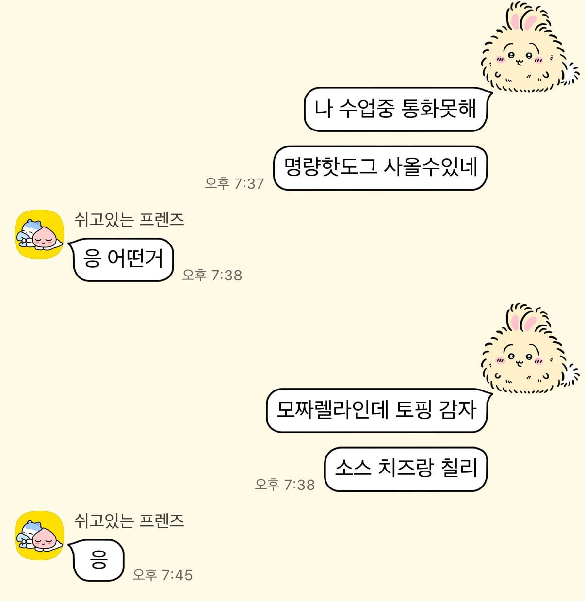

살면서 처음 보는 문장
*우째 이렇게 이쁜것이 날 낳았지*

살면서 처음 보는 문장
*우째 이렇게 이쁜것이 날 낳았지*
ㅋㅋㅋㅋ 뭔 소린가 10초 생각했다
근데 여자들이 은근 부모님을 친구처럼 대하더라
그 부모님 동결건존지 뭔지 현실에서 먼저듣고 인터넷으로 알았음
싸가지 없는 련
와 욕 한마디 안 하면서 이렇게 싸가지가 없다고...?
아음..
지가 하고 싶은 말을 하지못하면 무시당한 기분이 들기에
무조건 해야만하고 그걸 남들이 듣고 어떻게 생각할지는 관심밖임
띠부랄년
후레자식
저집은 글렀네
아재들 발작하는거보소
틀니 딱딱딱 탁탁탁 ㅋㅋㅋ
발상 전환 재밌는데 발작하는 사람들 진심임..?
개드립에서 웃기다고 댓글 단 게시물들 다 까봐야할듯 ㅋㅋㅋㅋㅋㅋㅋ
재능임
이쁜 것..?
부모가 아가들 보면서
우째 이렇게 이쁜것이 나한테서 나왔지
이런말을 거꾸로 한거아님?

와 첨보는 패륜초식
왜 이렇게 성난거임???
부모님을 이쁜것이라고 칭해서?
ㅋㅋㅋㅋㅋㅋ